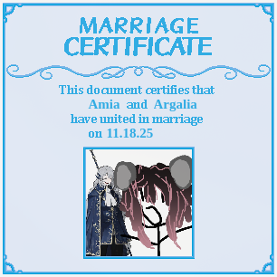

Ever since he called my name on November 18th, 2025, we have been maritally soulbounded together and forever. No one else can ever surpass the amount of love hidden and safe I had, and currently still have, for Argalia; The Blue Reverberation.
On April 17th, 2026, I have finally completed Library of Ruina. It was a memorable time, but what was more memorable was how I got to see Argalia duel against Roland
twice, and that's what makes him not only beautiful, but really cool (and kind of cute).
Someday, when I get back on, I'll wave back at him again. I love you, Argalia.
Go back?

i wish i got the reverb earbuds tho, its probably either thrown away or kept to a greedy reseller :( wish i lived in korea SIGH